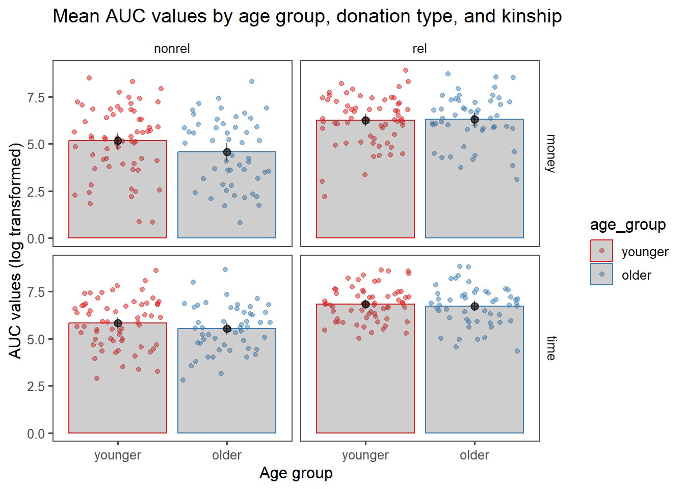

library(knitr)
library(tidyverse)
library(ggplot2)
library(car)
library(ez)
library(broom)
library(pander)
library(kableExtra)
library(lme4)
library(lmerTest)
library(effsize)
library(RColorBrewer)
library(grid)
library(gridExtra)
library(imager)
library(metafor)
theme_set(theme_bw())Replication of ‘Are Older Adults More Willing to Donate? The Roles of Donation Form and Social Relationship’ by Gong, Zhang & Fung (2019, The Journals of Gerontology: Series B)
Introduction
This project revolves around how age shapes people’s willingness to donate time and money to various others. The key research questions the original study was interested in examining were: 1) Do older adults donate more than younger adults? 2) Is age-donation relationship influenced by donation form (money vs time), kinship (relative vs non-relative), and/or social distance (closeness)?
In this experiment, samples of older and younger adults, respectively, respond to a survey containing the following demographic items: gender, age, core social network size (i.e., estimated number of important relatives and friends in their lives), level of education, and household income. They also complete a hypothetical donation task in which they indicate how much money or time they would donate to a number of targets who systematically vary in their closeness to and kinship with the participant. The study uses a mixed design in which age (older vs younger) is a between-subjects variable and donation form (money vs time), kinship with the target (relative vs non-relative), and social distance with the target (targets ranked 1st, 2nd, 5th, 10th, 20th, 50th, and 100th in a list of 100 people ranked in descending order of closeness) are within-subjects variables.
Analysis involves first fitting a hyperbolic discount function to group data and testing for goodness of fit, then fitting a hyperbolic discount function to individual data to find each participant’s discount rate (k) and area under curve (AUC) values. k and AUC values are then log-transformed, and finally submitted to mixed 2 (age) × 2 (donation form) × 2 (kinship) repeated measures ANOVAs, both with and without demographic variables as covariates.
Summary of prior replication attempt
The prior replication attempt was conducted by Yochai Shavit in 2017 and was unable to replicate Gong et al.’s (2019) main findings. However, Shavit’s replication attempt departed from the original study on a number of dimensions. Firstly, the original sample consisted of 89 younger (age range: 18-44, mean: 30.1) and 66 older adults (age range: 60-84, mean: 69.4) from Hong Kong. In the replication attempt, based on a power analysis indicating that data from 45 younger and 45 older adults would be sufficient to detect a main effect of age with 80% power in a one-tailed t-test, 43 younger (age range: 19-35, mean: 28.2) and 47 older (age range: 57-74, mean: 62.7) adults living in the United States were recruited. The samples thus differed in three key ways: the sample in the replication study was smaller, the participants in the replication study were younger, and the samples represented two very different cultures. Of these, Shavit suggests - and I concur - that the factor likely to be most implicated in the failure to replicate is culture, given there are different norms surrounding donation and attitudes towards relatives in Hong Kong and the United States. Additional differences in implementation and analysis were as follows:
The original study was conducted in person in a lab, whereas the replication study was conducted online. Given the study’s variables essentially consist exclusively of a survey, this seems unlikely to have caused any issues.
Participants in the original study were asked to imagine they had 100,000 Hong Kong dollars (HKD), whereas participants in the replication study were asked to imagine they had 100,000 US dollars (USD) to fit the context in which the data was collected. 100,000 HKD is approximately equivalent to 13,000 USD. Shavit consulted the first author of the original study about how to reconcile this discrepancy and was told to instruct participants to imagine having 100,000 USD rather than an amount equivalent to 100,000 HKD. Because this study focuses on how much participants are relatively willing to donate to others as a function of how close they are and whether they are related to them, rather than the absolute amount they are willing to donate, I feel there should be minimal issues with this approach.
In the original study, older participants’ cognitive function was assessed using the cognitive subscale of the Alzheimers’ Disease Assessment Scale (ADAS-Cog) to ensure the results would not be confounded with cognitive function. Because this is not a computer-based test, it was not used in the replication study. This seems unlikely to have been an issue because, in the original study, cognitive function and willingness to donate were not significantly correlated.
Because the replication study was conducted online, Shavit included a simple attention check and excluded participants who failed it.
The authors of the original study fit the hyperbolic discount function to the data using Matlab, but Shavit did this using the “optim” function from the ‘stats’ package in R. Shavit was able to obtain similar results to the original authors when testing this procedure a priori using simulated data, suggesting that differences in the results were not an artefact of different software being used for analysis.
The authors of the original study did not report how they dealt with missing data. In the replication study, Shavit excluded participants with missing AUC values from analysis.
In the original study, the younger adult group was comprised of participants aged between 18 and 44. Shavit elected to collect data from participants aged between 18 and 35. Additionally, the youngest participant/s in the older adult group in the original study was/were 60, but the youngest participant/s in the older adult group in the replication study was/were 57 because of constraints with regard to participant screening on Mechanical Turk.
The authors of the original study did not report using any post-hoc correction when conducting t-tests. In the replication study, Shavit reported the results of t-tests both with and without Bonferroni correction.
Methods
Power Analysis
It was not possible to conduct one single, definitive power analysis for either the original study or the replication study because GPower requires the correlation between the repeated measures as an input parameter for post-hoc power analyses of ANOVA which include repeated measures and between-subjects factors, and neither the original paper nor the write-up of the replication attempt reported this.
However, for the original study (which had partial eta-squared of 0.05, a total sample size of 155, 2 groups and 4 measurements), observed power would have been at least 0.81 (if the correlation between the measurements was 0.99) and up to over 0.99 (if the correlation between between the measurements was 0.01). It is thus safe to say the original study was sufficiently powered.
In the first replication attempt (which had partial eta-squared of 0.025, a total sample size of 90, and as before, 2 groups and 4 measurements), observed power could have been anywhere between 0.33 (if the correlation between the measurements was 0.99) and 0.84 (if the correlation between between the measurements was 0.01). It was thus likely underpowered.
Planned Sample
Based on the power analyses described above and budgetary constraints, I will collect data from 156 participants (78 for each group), which approximately corresponds to the original study’s sample size.
I will collect data from both a younger sample and an older sample. The author of the replication study suggested that cultural differences may have driven the failure to replicate. I will not be able to collect data specifically from Hong Kong Chinese participants as in the original study due to a dearth of Hong Kong residents actively using Prolific, but I will recruit participants who report their ethnicity as East Asian to try to sample people with more similar cultural backgrounds to the participants in the original study than those who participated in the first replication attempt.
In the original study, younger participants were aged between 18 and 44, and older participants were aged over 60. However, at the time of preparing this report, there were only 30 East Asian workers who were active on Prolific in the past 30 days. This number increased to 73 when minimum age was set to 55 (the lower end of the age distribution for the older group in the first replication attempt), but given this is still smaller than the sample size I aim to collect and it is unlikely all of these workers would participate in the study in any case, I will allow participants as young as 50 to participate as part of the older group. I believe this is justifiable because it seems most plausible that cultural differences drove the failure to replicate in the first replication attempt, so it is arguably pertinent to prioritise recruiting participants of East Asian background rather than participants aged over 55/60 for this rescue project.
Materials
Participants will be asked to list their gender, age, level of education, and household income. As a measure of core social network size, participants will be asked to estimate the number of important friends and family they have in their lives.
Participants will then be asked to complete hypothetical donation tasks for both relatives and non-relatives. The initial instruction will be as follows: “The following task asks you to imagine that you have a list of 100 relatives (non-relatives) arranged in descending order of their closeness with you. The person at position #1 is your closest relative (non-relative), while the person at position #100 is a relative (non-relative) you may know but are not close at all. You do not have to actually create the list – just imagine that you have done so. Next you will be asked to answer questions regarding these relatives (non-relatives) at a given position.”
Participants will then be asked 14 questions regarding how much money and time they would be willing to donate to the relatives and non-relatives at each of the following positions on those lists: 1st, 2nd, 5th, 10th, 20th, 50th, and 100th. The questions will read as follows: “Imagine that the relative (non-relative) at position N on your list is now hospitalized. He/she needs to be accompanied and taken care of in the hospital, as well as a large amount of money to pay for the medical expense. If you now own 100 thousand of US dollars and 100 days of vacation, how much money would you donate to him/her, and how many days would you spend taking care of him/her?”
The only difference between the materials described here and those used in the original study is that participants will be asked to imagine they have 100,000 US dollars rather than 10,000 HK dollars, following the instructions given to the author of the first replication attempt from the first author of the original study.
Procedure
Participants will be asked to complete a Qualtrics survey containing the measures described above in the order they appear above.
Controls
Following the first replication attempt, I will include a simple attention check. After participants are asked how much time and money they would be willing to donate to a relative at position 20 on their list, they will also be asked the following question: “In the last question, your answers referred to the participant in position:” with 3, 7, 12, 16, 20, 28, and 42 as answer choices. Participants who do not answer ‘20’ will be excluded from analysis.
Analysis Plan
Firstly, identifiable information will be removed from the data set. Next, I will follow the analysis plan outlined in the original study:
To analyze the donation data, we first modeled the group donation data. For each age × donation form × kinship cell, a hyperbolic discount function (i.e., Equation 1) was fit to the group median values (Jones & Rachlin, 2006; Rachlin & Jones, 2007, 2008) over the seven social distances (N = 1, 2, 5, 10, 20, 50, and 100): \[v=V/(1+kN)\] where V is the undiscounted reward value, v is the reward value that a person would like to forgo for the benefit for someone at a social distance N, and k is a constant indexing degree of social discounting (i.e., discount rate) across social distances. Following the convention of the literature, group median values instead of mean values were used because such data were usually not normally distributed (e.g., Jones & Rachlin, 2006).
The fitting process was conducted by curve fit toolbox of Matlab (version 2015a), where R-square and root-mean-square error (RMSE) were used to assess the goodness of fit. Such a modeling technique has been widely used in the literature on temporal (e.g., Frederick, Loewenstein, & O’Donoghue, 2002) and social discounting (e.g., Jones & Rachlin, 2006). The technique enables us to sketch individuals’ donation willingness across various social distances with simple parameters like discount rate (k) and area under curve (AUC) (e.g., Jones & Rachlin, 2006; Margittai et al., 2015). Discount rate (k) reflects a donor’s social-distance dependent selectivity as to donation willingness—a larger k value indicates a higher level of selectivity, that is, the donor treats socially close and distant recipients more differently. AUC could be used to index the donor’s overall generosity to people independent of social distance, with a larger value indicating a higher level of generosity (Margittai et al., 2015; Strombach et al., 2014).
Once the appropriateness of the hyperbolic discount function was confirmed for group data, we then conducted the same fitting process to individual data to get the discount rate (k) and the AUC for each participant under different conditions. Again following the convention of the literature, individual data that did not fit the hyperbolic discount function were excluded from further analyses (Vuchinich & Simpson, 1998). The individuals’ k and AUC values were then normalized by a natural logarithm transformation (e.g., Margittai et al., 2015), and transformed values that exceeded ±3 SDs were treated as outliers.
Next, the transformed individual k and AUC values were correlated with demographic variables to preliminarily check the influences of demographic variables on donation willingness. To examine the moderating roles of donation form and kinship in the relation between age and donation willingness, the transformed individual AUC values and k values were submitted respectively to a 2 (age: younger and older) × 2 (donation form: money and time) × 2 (kinship: relatives and nonrelatives) mixed design, repeated measures ANOVA (and post hoc tests), with and without controlling for demographic variables.
I will depart from the above analysis plan only in that I will use R rather than Matlab to conduct curve fitting and analyse data. Additionally, as in the first replication attempt, I will report the results of t-tests both with and without applying Bonferroni correction.
The key analysis of interest is the mixed design, repeated measures ANOVA of transformed AUC values controlling for demographic variables. Due to my error, the analysis I pre-registered was an ANOVA of transformed AUC values controlling for gender, number of important family members, and number of important friends. However, upon revisiting the original study and first replication, I found that the demographic variables this analysis controlled for were in fact number of important friends, education, and household income. I report the results of ANOVAs controlling for both sets of covariates below (and there is no change in the significance or direction of any effects regardless of which covariates are controlled for).
Differences from Original Study and 1st replication
Data will be collected on Prolific rather than in person (as in the original study) or on Mechanical Turk (as in the first replication attempt). This is unlikely to make a difference to the results because this is a survey study.
The original study’s participants were Hong Kong Chinese adults living in Hong Kong, whereas the first replication attempt sampled residents of the United States of any ethnicity. Rather than recruiting participants who live in a specific country, I will recruit participants who identify as East Asian to attempt to sample people with a relatively similar cultural background to the original study’s participants. If cultural differences were indeed implicated in the failure to replicate, this strategy may increase the chances of replicating the original study’s findings.
The replication closeness score for this study rests on how different one considers the differences between the populations to be. The key difference is that the original study collected data from individuals living in Hong Kong, and all participants in the ‘older’ group were over 60. In this replication attempt, participants self-identified as East Asian, and all participants in the ‘older’ group were over 50 (see Actual Sample section below). If one considers this to be a major population difference, this was a far replication. However, given the operalisation of the IV and DV, in addition to the stimuli used for the IV and DV, were the same, if one considers the population differences to be minor, this was a very close replication.
Methods Addendum (Post Data Collection)
Actual Sample
76 younger adults and 76 older adults who were prescreened for age and self-identification as East Asian participated in the study. After excluding participants with NA values for any of the variables used in the main analyses, participants who did not report that they identified as ‘Asian’ on the Qualtrics survey, and participants who failed the attention check, the final sample consisted of 75 younger (age range: 18-44, mean: 28.7) and 62 older adults (age range: 50-72, mean: 55.0) adults.
Differences from pre-data collection methods plan
The analysis pipeline could not tolerate missing values for any variables used in the analysis but I had initially only removed participants with missing values for variables in which missing values arose in the pilot studies. Consequently, I needed to tweak the code slightly to ensure only complete cases were included.
I added a short chunk of code to calculate the mean and range of age for each of the groups.
As discussed above, I pre-registered ANOVAs that included the covariates gender, number of important family members, and number of important friends. However, upon revisiting the original study and first replication, I found that the demographic variables the main analyses controlled for were in fact number of important friends, education, and household income. To rectify this error, I report the results of ANOVAs controlling for both sets of covariates below (and there is no change in the significance or direction of any effects regardless of which covariates are controlled for).
Results
Data preparation
Load relevant libraries
Write function to compute hyperbolic function
discount <- function (V, k, N) {
nu <- V / (1 + k * N)
return(nu)
}Write function to compute RMSE
data_vs_discount <- function(V, k, N, amount) {
nu <- discount(V, k, N)
RMSE <- sqrt(mean((amount - nu)^2))
return(RMSE)
}Import data
df = read.csv("psych251_final_data.csv", header=T)
df <- tail(df, -2)Remove identifying information and extraneous variables
df = select(df, -2:-17, -59)Add subject IDs
df$id <- 1:182 #changed to reflect final number of participantsRemove participants who failed attention check and TA
df = filter(df, attention_check==5)
df = filter(df, gender_5_TEXT!="I AM YOUR TA PLEASE EXCLUDE ME")Also remove participants who were in the pilot and double check only participants who identified as Asian/Pacific Islander are included (though screening was implemented on Prolific to ensure only workers who identified as East Asian were shown the study advertisement in the first instance)
df <- df %>%
mutate(StartDate = as.POSIXct(StartDate, format = "%d/%m/%Y %H:%M")) |>
filter(StartDate >= as.POSIXct("2023-12-07 15:57:46", format = "%Y-%m-%d %H:%M:%S")) #filtering out pilot participants
df <- df %>% filter(ethnicity ==2)Converting critical variables to numeric
df[,c(1:40)]=as.numeric(unlist(df[,c(1:40)]))Remove participants with missing values for key variables used in study
df <- filter(df, complete.cases(rel_1_money, rel_1_time, rel_2_money, rel_2_time, rel_5_money, rel_5_time, rel_10_money, rel_10_time, rel_20_money, rel_20_time, rel_50_money, rel_50_time, rel_100_money, rel_100_time, nonrel_1_money, nonrel_1_time, nonrel_2_money, nonrel_2_time, nonrel_5_money, nonrel_5_time, nonrel_10_money, nonrel_10_time, nonrel_20_money, nonrel_20_time, nonrel_50_money, nonrel_50_time, nonrel_100_money, nonrel_100_time, gender, education, income, important_friends, important_family))Group participants based on age (create an ‘age group’ column where participants are listed as either ‘younger’ or ‘older’)
df <- df%>%
mutate(age_group = dplyr::case_when(age <= 44 ~ "younger", age > 49 ~ "older"),
age_group = factor(age_group, level = c("younger", "older"))
)
#remove participants who do not fall into designated age groups or who didn't enter an age
df <- df %>% filter(!is.na(age_group))
summary(df$age_group)younger older
74 62 demos <- df %>%
group_by(age_group) %>%
summarise(
mean_age = mean(age),
range_age = paste(min(age), "-", max(age))
)Renaming money and time preference variables so they don’t get caught up in data wrangling
df <- df %>%
mutate(easeM = ease_money, easeT = ease_time, MorT = money_or_time) %>%
select(-ease_money, -ease_time, -money_or_time)
df$easeM <- as.numeric(df$easeM)
df$easeT <- as.numeric(df$easeT)
df$MorT <- as.numeric(df$MorT)Making data set longer
og_lng=df%>%
gather(condition, amount, c(matches("_money"),matches("_time"))
)%>%
separate(condition, c("kin", "soc_dist", "donation"), "_")%>%
spread(kin, amount)%>%
gather(kinship, amount,
rel, nonrel)For each age × donation form × kinship cell, fit hyperbolic discount function (i.e., Equation 1) to group median values over seven social distances (N = 1, 2, 5, 10, 20, 50, and 100)
#create df with monetary amounts divided by 1000 for plotting and analyses (to have the same units for time and money donations)
df_og2=df%>%mutate(rel_1_money=rel_1_money/1000,
rel_2_money=rel_2_money/1000,
rel_5_money=rel_5_money/1000,
rel_10_money=rel_10_money/1000,
rel_20_money=rel_20_money/1000,
rel_50_money=rel_50_money/1000,
rel_100_money=rel_100_money/1000,
nonrel_1_money=nonrel_1_money/1000,
nonrel_2_money=nonrel_2_money/1000,
nonrel_5_money=nonrel_5_money/1000,
nonrel_10_money=nonrel_10_money/1000,
nonrel_20_money=nonrel_20_money/1000,
nonrel_50_money=nonrel_50_money/1000,
nonrel_100_money=nonrel_100_money/1000)
#long-form this dataframe
og_lng2=df_og2%>%
gather(condition, amount, c(matches("_money"),matches("_time"))
)%>%
separate(condition, c("kin", "soc_dist", "donation"), "_")%>%
spread(kin, amount)%>%
gather(kinship, amount,
rel,nonrel)
#make variables numeric
og_lng %>%
mutate_all(as.numeric) %>% head() StartDate gender gender_5_TEXT age education income ethnicity
1 1701993540 1 NA 21 2 1 2
2 1701993540 1 NA 30 5 4 2
3 1701993780 1 NA 28 5 3 2
4 1701993480 2 NA 57 4 3 2
5 1701993660 1 NA 35 4 5 2
6 1701993960 2 NA 30 4 4 2
ethnicity_6_TEXT important_friends important_family attention_check id
1 NA 0 3 5 29
2 NA 3 3 5 30
3 NA 6 4 5 31
4 NA 1 3 5 32
5 NA 10 4 5 33
6 NA 5 8 5 34
age_group easeM easeT MorT soc_dist donation kinship amount
1 1 3 1 2 1 NA NA 50000
2 1 3 2 1 1 NA NA 10000
3 1 3 2 2 1 NA NA 80000
4 2 2 4 1 1 NA NA 50000
5 1 4 4 1 1 NA NA 50000
6 1 4 2 1 1 NA NA 10000og_lng2 %>%
mutate_all(as.numeric) %>% head() StartDate gender gender_5_TEXT age education income ethnicity
1 1701993540 1 NA 21 2 1 2
2 1701993540 1 NA 30 5 4 2
3 1701993780 1 NA 28 5 3 2
4 1701993480 2 NA 57 4 3 2
5 1701993660 1 NA 35 4 5 2
6 1701993960 2 NA 30 4 4 2
ethnicity_6_TEXT important_friends important_family attention_check id
1 NA 0 3 5 29
2 NA 3 3 5 30
3 NA 6 4 5 31
4 NA 1 3 5 32
5 NA 10 4 5 33
6 NA 5 8 5 34
age_group easeM easeT MorT soc_dist donation kinship amount
1 1 3 1 2 1 NA NA 50
2 1 3 2 1 1 NA NA 10
3 1 3 2 2 1 NA NA 80
4 2 2 4 1 1 NA NA 50
5 1 4 4 1 1 NA NA 50
6 1 4 2 1 1 NA NA 10#create table with original median values
med_table=og_lng%>%group_by(age_group,kinship,donation,soc_dist)%>%summarise(med_amnt=median(amount))
#create table of median values with the transformed monetary amounts
med_table2=og_lng2%>%group_by(age_group,kinship,donation,soc_dist)%>%summarise(med_amnt=median(amount))
#make soc_dist variables numeric
med_table <- mutate(med_table, soc_dist = as.numeric(soc_dist))
med_table2 <- mutate(med_table2, soc_dist = as.numeric(soc_dist))- Check goodness of fit using R-square and RMSE
#define dataset
d=med_table2
#create empty vectors to store values
age_group=vector(mode="character",length=0); donation=vector(mode="character",length=0); kinship=vector(mode="character",length=0); V_values=vector(mode="numeric",length=0); k_values=vector(mode="numeric",length=0); RMSE=vector(mode="numeric",length=0);
R_sq=vector(mode="numeric",length=0)
#run for each age group, extract values for donation * kinship conditions
for(i in unique(d$age_group)){
d_money_rel=d%>%filter(age_group==i, donation=="money", kinship=="rel") #-> create temp df to get values from
age_group=c(age_group,i) #-> store the appropriate age group
donation=c(donation, "money") #-> store the appropriate donation
kinship=c(kinship, "rel") #-> store the appropriate kinship
optim_discount_wrapper <- function(x) { #-> define discount wrapper to get V, k, and RMSE values for this condition
return(data_vs_discount(V = x[1], k = x[2],
N = d_money_rel$soc_dist,
amount = d_money_rel$med_amnt))
}
opt1=optim(c(100, 0.2), optim_discount_wrapper, method = "L-BFGS-B", lower=c(0,0), upper=c(300,100)) #-> run discount_wrapper
V_values=c(V_values,opt1$par[1]) #-> store resulting V_value
k_values=c(k_values, opt1$par[2]) #-> store resulting k_value
RMSE=c(RMSE, opt1$value) #-> store resulting RMSE value
d_money_rel$pred=discount(V = opt1$par[1], k = opt1$par[2],N = d_money_rel$soc_dist) #-> store predictions in temp dataset
cor1=cor.test(d_money_rel$med_amnt, d_money_rel$pred) #-> run cor.test to get correlation of predictions and data
R_sq=c(R_sq, (cor1$estimate)^2) #-> square the estimate (pearson's R) to get R^2.
d_money_nonrel=d%>%filter(age_group==i, donation=="money", kinship=="nonrel") #-> do all of this for the next donation * Kinship condition
age_group=c(age_group,i)
donation=c(donation, "money")
kinship=c(kinship, "nonrel")
optim_discount_wrapper <- function(x) {
return(data_vs_discount(V = x[1], k = x[2],
N = d_money_nonrel$soc_dist,
amount = d_money_nonrel$med_amnt))
}
opt2=optim(c(100, 0.2), optim_discount_wrapper, method = "L-BFGS-B", lower=c(0,0), upper=c(300,100))
V_values=c(V_values,opt2$par[1])
k_values=c(k_values, opt2$par[2])
RMSE=c(RMSE, opt2$value)
d_money_nonrel$pred=discount(V = opt2$par[1], k = opt2$par[2],N = d_money_nonrel$soc_dist)
cor2=cor.test(d_money_nonrel$med_amnt, d_money_nonrel$pred)
R_sq=c(R_sq, (cor2$estimate)^2)
d_time_rel=d%>%filter(age_group==i, donation=="time", kinship=="rel")
age_group=c(age_group,i)
donation=c(donation, "time")
kinship=c(kinship, "rel")
optim_discount_wrapper <- function(x) {
return(data_vs_discount(V = x[1], k = x[2],
N = d_time_rel$soc_dist,
amount = d_time_rel$med_amnt))
}
opt3=optim(c(100, 0.2), optim_discount_wrapper, method = "L-BFGS-B", lower=c(0,0), upper=c(300,100))
V_values=c(V_values,opt3$par[1])
k_values=c(k_values, opt3$par[2])
RMSE=c(RMSE, opt3$value)
d_time_rel$pred=discount(V = opt3$par[1], k = opt3$par[2],N = d_time_rel$soc_dist)
cor3=cor.test(d_time_rel$med_amnt, d_time_rel$pred)
R_sq=c(R_sq, (cor3$estimate)^2)
d_time_nonrel=d%>%filter(age_group==i, donation=="time", kinship=="nonrel")
age_group=c(age_group,i)
donation=c(donation, "time")
kinship=c(kinship, "nonrel")
optim_discount_wrapper <- function(x) {
return(data_vs_discount(V = x[1], k = x[2],
N = d_time_nonrel$soc_dist,
amount = d_time_nonrel$med_amnt))
}
opt4=optim(c(100, 0.2), optim_discount_wrapper, method = "L-BFGS-B", lower=c(0,0), upper=c(300,100))
V_values=c(V_values,opt4$par[1])
k_values=c(k_values, opt4$par[2])
RMSE=c(RMSE, opt4$value)
d_time_nonrel$pred=discount(V = opt4$par[1], k = opt4$par[2],N = d_time_nonrel$soc_dist)
cor4=cor.test(d_time_nonrel$med_amnt, d_time_nonrel$pred)
R_sq=c(R_sq, (cor4$estimate)^2)
}
#Add all vectors to one dataset
med_smry=as.data.frame(cbind(`Age group`=age_group, Donation=donation, Kinship=kinship, V=V_values, k=k_values, `R sqr`=R_sq, RMSE), row.names = F)%>%mutate(V=as.character(V), k=as.character(k), `R sqr`=as.character(`R sqr`), RMSE=as.character(RMSE))%>%mutate(V=as.numeric(V), k=as.numeric(k), `R sqr`=as.numeric(`R sqr`), RMSE=as.numeric(RMSE))
kable(med_smry, digits = 2, align = "c", caption = "Estimated Parameters and Goodness-of-fit Indices of the Hyperbolic Functions, group median values")| Age group | Donation | Kinship | V | k | R sqr | RMSE |
|---|---|---|---|---|---|---|
| younger | money | rel | 87.27 | 1.09 | 0.98 | 2.58 |
| younger | money | nonrel | 300.00 | 14.23 | 1.00 | 0.52 |
| younger | time | rel | 101.08 | 0.62 | 0.99 | 2.84 |
| younger | time | nonrel | 64.65 | 1.59 | 0.99 | 0.67 |
| older | money | rel | 117.76 | 1.37 | 0.98 | 2.61 |
| older | money | nonrel | 300.00 | 39.21 | 0.99 | 0.26 |
| older | time | rel | 161.86 | 0.81 | 0.98 | 5.71 |
| older | time | nonrel | 56.20 | 1.75 | 0.99 | 0.84 |
- Fit hyperbolic discount function to individual data and calculate k and AUC values for each participant in each condition
#Create the empty dataframe, in which each participant have 4 rows
df2=as.data.frame(cbind(
id=rep(unique(og_lng2$id),4),
age_group=c(),
gender=c(),
education=c(),
income=c(),
important_friends=c(),
important_family=c(),
ethnicity=c(),
kinship=c(),
donation=c(),
k=c(),
AUC=c()
))
#Fill in values for demographics (age, age group, gender, education, income, number of important family and friends)
for (i in unique(df2$id)){
df_sub=filter(df_og2, id==i)
df2[df2$id==i, 'age']=df_sub$age
df2[df2$id==i, 'age_group']=df_sub$age_group
df2[df2$id==i, 'gender']=df_sub$gender
df2[df2$id==i, 'education']=df_sub$education
df2[df2$id==i, 'income']=df_sub$income
df2[df2$id==i, 'important_friends']=df_sub$important_friends
df2[df2$id==i, 'important_family']=df_sub$important_family
df2[df2$id==i, 'ethnicity']=df_sub$ethnicity
}df2=as.data.frame(cbind(
id=rep(unique(og_lng2$id),4),
age_group=c(),
gender=c(),
education=c(),
income=c(),
important_friends=c(),
important_family=c(),
ethnicity=c(),
kinship=c(),
donation=c(),
k=c(),
AUC=c()
))
#Fill in values for demographics
for (i in unique(df2$id)){
df_sub=filter(df_og2, id==i)
df2[df2$id==i, 'age']=df_sub$age
df2[df2$id==i, 'age_group']=df_sub$age_group
df2[df2$id==i, 'gender']=df_sub$gender
df2[df2$id==i, 'education']=df_sub$education
df2[df2$id==i, 'income']=df_sub$income
df2[df2$id==i, 'important_friends']=df_sub$important_friends
df2[df2$id==i, 'important_family']=df_sub$important_family
df2[df2$id==i, 'ethnicity']=df_sub$ethnicity
}#for each individual, extract values for donation * kinship conditions
#set variable soc_dist in og_lng2 to be numeric
og_lng2$soc_dist=as.character(og_lng2$soc_dist)
og_lng2$soc_dist=as.numeric(og_lng2$soc_dist)
is.numeric(og_lng2$soc_dist)[1] TRUE#Get length of number of participants (n) as value
n_p=length(unique(df2$id))
#Create 4 temporary df's to store values from each iteration
df2_mr=df2[1:n_p,] #-> for money_relative
df2_mnr=df2[(n_p+1):(n_p*2),] #->for money_nonrelative
df2_tr=df2[(2*n_p+1):(n_p*3),] #->for time_relative
df2_tnr=df2[(3*n_p+1):(n_p*4),] #->for time_nonrel
#run discount wrapper for each subject in 2*2 conditions
for(i in unique(df2$id)){
#money relative
d_mon_rel=og_lng2%>%filter(id==i, donation=="money", kinship=="rel") #-> create temp df to get values from
df2_mr[df2_mr$id==i, 'donation']="money" #-> store the appropriate donation
df2_mr[df2_mr$id==i, 'kinship']="rel" #-> store the appropriate kinship
optim_discount_wrapper <- function(x) { #-> define discount wrapper to get V, k, and RMSE values for this condition
return(data_vs_discount(V = x[1], k = x[2],
N = d_mon_rel$soc_dist,
amount = d_mon_rel$amount))
}
opt1=optim(c(100, 0.2), optim_discount_wrapper, method = "L-BFGS-B", lower=c(0,0), upper=c(300,100)) #-> run discount_wrapper
df2_mr[df2_mr$id==i, 'k']=opt1$par[2] #-> store resulting k_value
df2_mr[df2_mr$id==i, 'V']=opt1$par[1] #-> store resulting V_value
# Get AUC value - using WolframAlpha, the integral of this discount function is:
# V/k*ln(abs(1+k*n))+c -> we don't really care about c for AUC.
k=opt1$par[2]
V=opt1$par[1]
#Evaluate for upper bound
up=V/k*log(abs(1+k*100))
lower=V/k*log(abs(1+k*0))
df2_mr[df2_mr$id==i,'AUC']=up-lower
#money nonrelative
d_mon_nonrel=og_lng2%>%filter(id==i, donation=="money", kinship=="nonrel")
df2_mnr[df2_mnr$id==i, 'donation']="money"
df2_mnr[df2_mnr$id==i, 'kinship']="nonrel"
optim_discount_wrapper <- function(x) {
return(data_vs_discount(V = x[1], k = x[2],
N = d_mon_nonrel$soc_dist,
amount = d_mon_nonrel$amount))
}
opt2=optim(c(100, 0.2), optim_discount_wrapper, method = "L-BFGS-B", lower=c(0,0), upper=c(300,100))
df2_mnr[df2_mnr$id==i, 'k']=opt2$par[2]
df2_mnr[df2_mnr$id==i, 'V']=opt2$par[1]
# Get AUC value
k=opt2$par[2]
V=opt2$par[1]
#Evaluate for upper bound
up=V/k*log(abs(1+k*100))
lower=V/k*log(abs(1+k*0))
df2_mnr[df2_mnr$id==i,'AUC']=up-lower
#time relative
d_time_rel=og_lng2%>%filter(id==i, donation=="time", kinship=="rel")
df2_tr[df2_tr$id==i, 'donation']="time"
df2_tr[df2_tr$id==i, 'kinship']="rel"
optim_discount_wrapper <- function(x) {
return(data_vs_discount(V = x[1], k = x[2],
N = d_time_rel$soc_dist,
amount = d_time_rel$amount))
}
opt3=optim(c(100, 0.2), optim_discount_wrapper, method = "L-BFGS-B", lower=c(0,0), upper=c(300,100))
df2_tr[df2_tr$id==i, 'k']=opt3$par[2]
df2_tr[df2_tr$id==i, 'V']=opt3$par[1]
# Get AUC value
k=opt3$par[2]
V=opt3$par[1]
#Evaluate for upper bound
up=V/k*log(abs(1+k*100))
lower=V/k*log(abs(1+k*0))
df2_tr[df2_tr$id==i,'AUC']=up-lower
#time nonrelative
d_time_nonrel=og_lng2%>%filter(id==i, donation=="time", kinship=="nonrel")
df2_tnr[df2_tnr$id==i, 'donation']="time"
df2_tnr[df2_tnr$id==i, 'kinship']="nonrel"
optim_discount_wrapper <- function(x) {
return(data_vs_discount(V = x[1], k = x[2],
N = d_time_nonrel$soc_dist,
amount = d_time_nonrel$amount))
}
opt4=optim(c(100, 0.2), optim_discount_wrapper, method = "L-BFGS-B", lower=c(0,0), upper=c(300,100))
df2_tnr[df2_tnr$id==i, 'k']=opt4$par[2]
df2_tnr[df2_tnr$id==i, 'V']=opt4$par[1]
# Get AUC value
k=opt4$par[2]
V=opt4$par[1]
#Evaluate for upper bound
up=V/k*log(abs(1+k*100))
lower=V/k*log(abs(1+k*0))
df2_tnr[df2_tnr$id==i,'AUC']=up-lower
}
#Combine all into one dataframe (df2)
df2=full_join(df2_mr, df2_mnr)%>%full_join(df2_tr)%>%full_join(df2_tnr)
df2_plot_pred=df2- Exclude participants whose data does not fit hyperbolic discount function
- Normalise individual k and AUC values via natural log transformation
- Exclude individuals with transformed values that exceed ±3 SDs
- Correlational analyses on demographic variables and transformed individual k/AUC values
#recode all NaN AUC values as missing data (NA)
for(i in 1:length(df2$id)){
if(is.nan(df2$AUC[i])){df2$AUC[i]=NA}else{df2$AUC[i]=df2$AUC[i]}
}
#Negative or zero AUC or k values (indicating a problem with the fitting process)
df2$AUC=recode(df2$AUC, "lo:0.01=NA")
df2$k=recode(df2$k, "lo:0.01=NA")
#check if AUC is normally distributed
AUc_hist=ggplot(data=df2, aes(x=AUC))+geom_histogram() #-> strong positive skew
logAUC_hist=ggplot(data = df2, aes(x=log(AUC)))+geom_histogram() #-> looks better
#check if k is normally distributed
k_hist=ggplot(data=df2, aes(x=k))+geom_histogram() #-> strong positive skew
log_k_hist=ggplot(data = df2, aes(x=log(k)))+geom_histogram() #-> looks better
#Since Gong et al., used log(AUC) and log(k) for their analysis, I shall do the same
df2$logAUC=log(df2$AUC)
df2$log_k=log(df2$k)
#compute +/- 3 S.D for logAUC and log_k values
logAUC_hi=mean(df2$logAUC, na.rm=T)+(3*sd(df2$logAUC, na.rm = T))
logAUC_lo=mean(df2$logAUC, na.rm=T)-(3*sd(df2$logAUC, na.rm = T))
log_k_hi=mean(df2$log_k, na.rm=T)+(3*sd(df2$logAUC, na.rm = T))
log_k_lo=mean(df2$log_k, na.rm=T)-(3*sd(df2$logAUC, na.rm = T))
#df2=df2%>%filter(k<=(mean(k)+3*sd(k)) & k>=(mean(k)-3*sd(k)) & AUC<=(mean(AUC)+3*sd(AUC))& AUC>=(mean(AUC)-3*sd(AUC))) #-> retain only observations that meet criteria
#recode all observations outside of the +/- 3 S.D range as missing values
df2$logAUC[df2$logAUC<logAUC_lo]=NA
df2$logAUC[df2$logAUC>logAUC_hi]=NA
df2$log_k[df2$log_k<log_k_lo]=NA
df2$log_k[df2$log_k>log_k_hi]=NA
#check that the minimal values are not lower than k and AUC "_low"'s, and maximal not higher than "_high"'s
min(df2$log_k, na.rm = T)<log_k_lo; max(df2$log_k,na.rm = T)>log_k_hi; min(df2$logAUC,na.rm = T)<logAUC_lo; max(df2$logAUC,na.rm = T)>logAUC_hi[1] FALSE[1] FALSE[1] FALSE[1] FALSE#Change id to factor
is.numeric(df2$id) #-> true[1] TRUEdf2$id=as.character(df2$id); df2$id=as.factor(df2$id)
is.factor(df2$id)#-> true[1] TRUEsummary(df2$age_group); summary(df2$donation); summary(df2$kinship) younger older
296 248 Length Class Mode
544 character character Length Class Mode
544 character character # check that predictors are factors and AUC is numeric
is.factor(df2$age_group); is.factor(df2$donation); is.factor(df2$kinship) #-> age_group yes, others no[1] TRUE[1] FALSE[1] FALSEis.character(df2$donation)#-> true[1] TRUEdf2$donation=as.factor(df2$donation); is.factor(df2$donation)[1] TRUEis.character(df2$kinship)#-> true[1] TRUEdf2$kinship=as.factor(df2$kinship); is.factor(df2$kinship)[1] TRUEis.numeric(df2$logAUC)#-> True[1] TRUE## Remove all observations of subjects with outliers
na_counts=df2%>%group_by(id)%>%summarise(naAUC_counts=sum(is.na(logAUC)),na_k_counts=sum(is.na(log_k)))%>%ungroup()
for (i in unique(df2$id)){
temp=filter(na_counts, id==i)
df2[df2$id==i, 'naAUC_counts']=temp$naAUC_counts
df2[df2$id==i, 'na_k_counts']=temp$na_k_counts
}
df2_noNA_AUC=df2%>%filter(naAUC_counts==0)
df2_noNA_k=df2%>%filter(na_k_counts==0)Confirmatory analysis
- 2 (age: younger vs older) × 2 (donation form: money vs time) × 2 (kinship: relatives vs non-relatives) mixed design, repeated measures ANOVA of transformed individual AUC values, with demographic variables as control + post-hoc tests if applicable (key analysis of interest)
- 2 (age: younger vs older) × 2 (donation form: money vs time) × 2 (kinship: relatives vs non-relatives) mixed design, repeated measures ANOVA of transformed individual AUC values, without demographic variables as control + post-hoc tests if applicable
- 2 (age: younger vs older) × 2 (donation form: money vs time) × 2 (kinship: relatives vs non-relatives) mixed design, repeated measures ANOVA of transformed individual k values, with demographic variables as control + post-hoc tests if applicable
- 2 (age: younger vs older) × 2 (donation form: money vs time) × 2 (kinship: relatives vs non-relatives) mixed design, repeated measures ANOVA of transformed individual k values, without demographic variables as control + post-hoc tests if applicable
#preparing the datasets for ANOVA by removing missing values (updated to include education and income)
df2_noNA_AUC <- na.omit(df2_noNA_AUC[, c("id", "logAUC", "important_family", "important_friends", "donation", "kinship", "age_group", "gender", "education", "income")])
df2_noNA_k <- na.omit(df2_noNA_k[, c("id", "log_k", "important_family", "important_friends", "donation", "kinship", "age_group", "gender", "education", "income")])#AUC without covariates
anova_AUC1=ezANOVA(data = df2_noNA_AUC, wid=.(id), dv=na.omit(logAUC), within = .(donation, kinship), between = .(age_group), type = 3, observed = .(age_group))
kable(anova_AUC1$ANOVA)| Effect | DFn | DFd | F | p | p<.05 | ges | |
|---|---|---|---|---|---|---|---|
| 2 | age_group | 1 | 112 | 1.2336057 | 0.2690857 | 0.0069667 | |
| 3 | donation | 1 | 112 | 42.4995862 | 0.0000000 | * | 0.0528351 |
| 5 | kinship | 1 | 112 | 133.1895202 | 0.0000000 | * | 0.1720180 |
| 4 | age_group:donation | 1 | 112 | 0.1233329 | 0.7261072 | 0.0001619 | |
| 6 | age_group:kinship | 1 | 112 | 3.3290225 | 0.0707329 | 0.0051928 | |
| 7 | donation:kinship | 1 | 112 | 10.8717450 | 0.0013088 | * | 0.0030717 |
| 8 | age_group:donation:kinship | 1 | 112 | 6.0558879 | 0.0153863 | * | 0.0017163 |
#AUC with gender, number of important family members, and number of important friends as covariates
anova_AUC2=ezANOVA(data = df2_noNA_AUC, wid=.(id), dv=na.omit(logAUC), within = .(donation, kinship), between = .(age_group), between_covariates = .(gender, important_family, important_friends) ,type = 3, observed = .(age_group))
kable(anova_AUC2$ANOVA)| Effect | DFn | DFd | F | p | p<.05 | ges | |
|---|---|---|---|---|---|---|---|
| 2 | age_group | 1 | 112 | 1.5106072 | 0.2216225 | 0.0084787 | |
| 3 | donation | 1 | 112 | 42.4995862 | 0.0000000 | * | 0.0531637 |
| 5 | kinship | 1 | 112 | 133.1895202 | 0.0000000 | * | 0.1729524 |
| 4 | age_group:donation | 1 | 112 | 0.1233329 | 0.7261072 | 0.0001629 | |
| 6 | age_group:kinship | 1 | 112 | 3.3290225 | 0.0707329 | 0.0052269 | |
| 7 | donation:kinship | 1 | 112 | 10.8717450 | 0.0013088 | * | 0.0030918 |
| 8 | age_group:donation:kinship | 1 | 112 | 6.0558879 | 0.0153863 | * | 0.0017276 |
#AUC with education, income, and number of important friends as covariates
anova_AUC2=ezANOVA(data = df2_noNA_AUC, wid=.(id), dv=na.omit(logAUC), within = .(donation, kinship), between = .(age_group), between_covariates = .(education, income, important_friends) ,type = 3, observed = .(age_group))
kable(anova_AUC2$ANOVA)| Effect | DFn | DFd | F | p | p<.05 | ges | |
|---|---|---|---|---|---|---|---|
| 2 | age_group | 1 | 112 | 0.1865793 | 0.6666095 | 0.0010394 | |
| 3 | donation | 1 | 112 | 42.4995862 | 0.0000000 | * | 0.0548476 |
| 5 | kinship | 1 | 112 | 133.1895202 | 0.0000000 | * | 0.1777183 |
| 4 | age_group:donation | 1 | 112 | 0.1233329 | 0.7261072 | 0.0001684 | |
| 6 | age_group:kinship | 1 | 112 | 3.3290225 | 0.0707329 | 0.0054020 | |
| 7 | donation:kinship | 1 | 112 | 10.8717450 | 0.0013088 | * | 0.0031951 |
| 8 | age_group:donation:kinship | 1 | 112 | 6.0558879 | 0.0153863 | * | 0.0017855 |
#k value without covariates
anova_k1=ezANOVA(data = df2_noNA_k, wid=.(id), dv=na.omit(log_k), within = .(donation, kinship), between = .(age_group), type = 3, observed = .(age_group))
kable(anova_k1$ANOVA)| Effect | DFn | DFd | F | p | p<.05 | ges | |
|---|---|---|---|---|---|---|---|
| 2 | age_group | 1 | 122 | 0.0193905 | 0.8894824 | 0.0000975 | |
| 3 | donation | 1 | 122 | 9.5479500 | 0.0024799 | * | 0.0086659 |
| 5 | kinship | 1 | 122 | 29.4591287 | 0.0000003 | * | 0.0457469 |
| 4 | age_group:donation | 1 | 122 | 1.9273779 | 0.1675754 | 0.0017646 | |
| 6 | age_group:kinship | 1 | 122 | 0.2799433 | 0.5976997 | 0.0004556 | |
| 7 | donation:kinship | 1 | 122 | 2.0189688 | 0.1578955 | 0.0012108 | |
| 8 | age_group:donation:kinship | 1 | 122 | 1.0013225 | 0.3189713 | 0.0006012 |
#k value with gender, number of important family members, and number of important friends as covariates
anova_k2=ezANOVA(data = df2_noNA_k, wid=.(id), dv=na.omit(log_k), within = .(donation, kinship), between = .(age_group), between_covariates = .(gender, important_family, important_friends) ,type = 3, observed = .(age_group))
kable(anova_k2$ANOVA)| Effect | DFn | DFd | F | p | p<.05 | ges | |
|---|---|---|---|---|---|---|---|
| 2 | age_group | 1 | 122 | 0.0036504 | 0.9519211 | 0.0000182 | |
| 3 | donation | 1 | 122 | 9.5479500 | 0.0024799 | * | 0.0088133 |
| 5 | kinship | 1 | 122 | 29.4591287 | 0.0000003 | * | 0.0464956 |
| 4 | age_group:donation | 1 | 122 | 1.9273779 | 0.1675754 | 0.0017949 | |
| 6 | age_group:kinship | 1 | 122 | 0.2799433 | 0.5976997 | 0.0004634 | |
| 7 | donation:kinship | 1 | 122 | 2.0189688 | 0.1578955 | 0.0012315 | |
| 8 | age_group:donation:kinship | 1 | 122 | 1.0013225 | 0.3189713 | 0.0006115 |
#k value with education, income, and number of important friends as covariates
anova_k2=ezANOVA(data = df2_noNA_k, wid=.(id), dv=na.omit(log_k), within = .(donation, kinship), between = .(age_group), between_covariates = .(education, income, important_friends) ,type = 3, observed = .(age_group))
kable(anova_k2$ANOVA)| Effect | DFn | DFd | F | p | p<.05 | ges | |
|---|---|---|---|---|---|---|---|
| 2 | age_group | 1 | 122 | 0.2484529 | 0.6190640 | 0.0012320 | |
| 3 | donation | 1 | 122 | 9.5479500 | 0.0024799 | * | 0.0088332 |
| 5 | kinship | 1 | 122 | 29.4591287 | 0.0000003 | * | 0.0465966 |
| 4 | age_group:donation | 1 | 122 | 1.9273779 | 0.1675754 | 0.0017990 | |
| 6 | age_group:kinship | 1 | 122 | 0.2799433 | 0.5976997 | 0.0004644 | |
| 7 | donation:kinship | 1 | 122 | 2.0189688 | 0.1578955 | 0.0012343 | |
| 8 | age_group:donation:kinship | 1 | 122 | 1.0013225 | 0.3189713 | 0.0006129 |
Visualisation
#set data to create similar median amounts plots to the one appearing in the original paper
med_table_plot=med_table2%>%unite('Age-Kinship', c('age_group', 'kinship'), sep=" - ")
ggplot(data = med_table_plot, aes(x = soc_dist, y = med_amnt, color = `Age-Kinship`)) +
geom_point(position = "dodge", aes(shape = `Age-Kinship`)) +
geom_smooth(method = "nls", formula = y ~ a / (b + x),
method.args = list(start = c(a = 100, b = 10)),
se = FALSE, linewidth = 0.5) +
ylim(0, 100) +
facet_grid(donation ~ ., labeller = labeller(donation = c("money" = "Money (x $1000 USD)", "time" = "Time (x days)"))) +
xlab("Closeness") +
ylab("Median amount donated") +
ggthemes::theme_few()Exploratory analyses
I was interested in testing differences between age groups on demographic variables.
gender_table <- table(df$gender, df$age_group)
barplot(gender_table, beside = TRUE,
legend = c("Male", "Female", "Non-binary"),
main = "Gender x Age", xlab = "Age Group", ylab = "Count")chisq.test(table(df$gender, df$age_group)) #significantly different
Pearson's Chi-squared test
data: table(df$gender, df$age_group)
X-squared = 6.7646, df = 2, p-value = 0.03397education_table <- table(df$education, df$age_group)
barplot(education_table, beside = TRUE,
legend = c("Middle school", "High school", "Some college", "Bachelor's degree", "Graduate degree"),
main = "Education x Age", xlab = "Age Group", ylab = "Count")t.test(education ~ age_group, data = df) #not significantly different
Welch Two Sample t-test
data: education by age_group
t = -1.7487, df = 133.95, p-value = 0.08263
alternative hypothesis: true difference in means between group younger and group older is not equal to 0
95 percent confidence interval:
-0.5165006 0.0317578
sample estimates:
mean in group younger mean in group older
3.918919 4.161290 income_table <- table(df$income, df$age_group)
barplot(income_table, beside = TRUE,
legend = c("0-30k", "30-60k", "60-90k", "90-120k", "120-150k", "150k+"),
main = "Income x Age", xlab = "Age Group", ylab = "Count")t.test(income ~ age_group, data = df) #not significantly different
Welch Two Sample t-test
data: income by age_group
t = -1.1343, df = 124.09, p-value = 0.2589
alternative hypothesis: true difference in means between group younger and group older is not equal to 0
95 percent confidence interval:
-0.8017096 0.2175771
sample estimates:
mean in group younger mean in group older
3.175676 3.467742 income_table <- table(df$important_friends, df$age_group)
barplot(income_table, beside = TRUE,
main = "Number of important friends x Age", xlab = "Age Group", ylab = "Count")t.test(important_friends ~ age_group, data = df) #not significantly different
Welch Two Sample t-test
data: important_friends by age_group
t = 0.24713, df = 126.96, p-value = 0.8052
alternative hypothesis: true difference in means between group younger and group older is not equal to 0
95 percent confidence interval:
-1.078263 1.386022
sample estimates:
mean in group younger mean in group older
4.621622 4.467742 income_table <- table(df$important_family, df$age_group)
barplot(income_table, beside = TRUE,
main = "Number of important family x Age", xlab = "Age Group", ylab = "Count")t.test(important_family ~ age_group, data = df) #not significantly different
Welch Two Sample t-test
data: important_family by age_group
t = -1.4941, df = 126.69, p-value = 0.1376
alternative hypothesis: true difference in means between group younger and group older is not equal to 0
95 percent confidence interval:
-3.1087422 0.4339384
sample estimates:
mean in group younger mean in group older
5.243243 6.580645 income_table <- table(df$easeM, df$age_group)
barplot(income_table, beside = TRUE,
main = "Ease of earning money x Age", xlab = "Age Group", ylab = "Count")t.test(easeM ~ age_group, data = df) #not significantly different
Welch Two Sample t-test
data: easeM by age_group
t = 0.75284, df = 133.43, p-value = 0.4529
alternative hypothesis: true difference in means between group younger and group older is not equal to 0
95 percent confidence interval:
-0.2007470 0.4474776
sample estimates:
mean in group younger mean in group older
2.445946 2.322581 income_table <- table(df$easeT, df$age_group)
barplot(income_table, beside = TRUE,
main = "Ease of getting time off x Age", xlab = "Age Group", ylab = "Count")t.test(easeT ~ age_group, data = df) #not significantly different
Welch Two Sample t-test
data: easeT by age_group
t = -1.2649, df = 125.4, p-value = 0.2083
alternative hypothesis: true difference in means between group younger and group older is not equal to 0
95 percent confidence interval:
-0.6428274 0.1415197
sample estimates:
mean in group younger mean in group older
2.878378 3.129032 Interestingly, the age groups were statistically equivalent across all demographic variables except gender. This suggests that the lack of a main effect of age was not driven by age-related differences in other demographic factors.
Discussion
Mini meta analysis
I was not able to conduct a mini meta-analysis because the key analysis of interest was the main effect of age in a mixed design ANOVA. The effect size measure obtainable was partial eta-squared and there was no real way for me to convert this to Cohen’s d (largely due to differences in group sizes within each of the studies). Additionally, no other attempts to replicate this study other than those conducted for this class were found.
However, I will note here that effect size of the main effect of age varied considerably in each incarnation of this study: in the original study partial eta-squared was 0.05, in the first replication attempt it was 0.025, and in this study it was between 0.001 and 0.01 depending on whether and which covariates were included in analyses.
In the original study, the main effect of age on AUC value was F(1,134) = 6.52, p < .05. In the first replication attempt, the main effect effect of age on AUC value was F(1,70) = 1.66, p = .20. In the the current replication rescue attempt, the main effect effect of age on AUC value was F(1,113) = 0.24, p = .62.
Summary of Replication Attempt
Overall, it is fair to say this replication attempt was not successful. Across multiple ANOVAs with or without two different combinations of covariates, and irrespective of the measure of donation willingness used as the dependent variable (i.e., AUC or k values), the main effect of age was consistently far from statistically significant. Therefore, I would give this rescue attempt a rating of 0 in terms of how well it replicated the original study’s reuslts.
Interestingly, however, donation type and kinship emerged as robust predictors of donation willingness across all analyses. Visualisation of the data revealed that participants, regardless of age, were significantly more willing to donate time over money, and to donate to relatives over non-relatives. This suggests that, at least among this sample, donation type and kinship may be much more important predictors of generosity than age.
Perhaps even more interestingly, in the original study, Gong and colleagues did not find any main effect of donation type or kinship. However, in the first replication attempt, Shavit actually found main effects of donation type and kinship in the same directions as the current rescue project. Accordingly, though the findings of the current project essentially did not converge with the original study in any way, they actually served to replicate and corroborate the findings of the first replication attempt: there was no significant main effect of age, but there were significant main effects of donation type and kinship.
Commentary
The main way in which this project attempted to shed light on the first replication attempt’s failure to replicate the original study’s findings was by sampling a new set of individuals whose cultural backgrounds more closely aligned with the participants in the original study. Although this was not a perfect, or even ideal, test of the role of culture in moderating the complex relationship between donation willingness and age, kinship, and donation form - we cannot assume that the experiences and values of Hong Kong Chinese are comparable to those of Prolific workers who identify as East Asian - it does suggest that the effect found in the original study may have been specific to the Hong Kong Chinese context.
An important caveat to this study’s findings is that the participants in the older group here were considerably younger than the participants in both the original study and the first replication attempt. Here, we elected to lower the age limit for participation as part of the older adult group in order to recruit a sufficient number of older East Asian participants on Prolific, and, in this way, to prioritise investigating the influence of culture. Nonetheless, this is a meaningful way in which this rescue attempt diverged from the studies it followed.
As a final aside, it was interesting to see how powerful educational attainment and household income - both of which can be considered facets of socioeconomic status (SES) - were in explaining variance in donation willingness when included in the analyses as covariates. This suggests that these factors may be considerably more important than age in shaping generosity towards close others, at least among English-speaking samples. This is perhaps unsurprising as - even though the donation task was purely hypothetical - higher SES seems intuitively likely to be associated with higher rates of engaging in donation behaviour. Perhaps the more money people have to spare, the easier it is for them to imagine wanting to share their money and time with the people they care about in times of need.
Supplementary Image
(added by VB for effect direction estimation)
ggplot(data = df2_noNA_AUC, aes(x=age_group, y=logAUC,color=age_group))+
geom_point(position="jitter",alpha=0.5)+
scale_color_brewer(palette="Set1")+
stat_summary(fun = "mean", geom="bar", alpha=0.3)+
ylim(0,9)+
stat_summary(fun.data = "mean_cl_boot", geom="pointrange", alpha=0.6, color="black")+
#geom_pointrange(data=mean_and_ci, aes(y=mean,ymin = ci_lower, ymax = ci_upper),color = "black",size=0.7, alpha=0.6)+
ggthemes::theme_few()+
ggtitle("Mean AUC values by age group, donation type, and kinship")+
ylab("AUC values (log transformed)")+
xlab("Age group")+
facet_grid(donation~kinship)